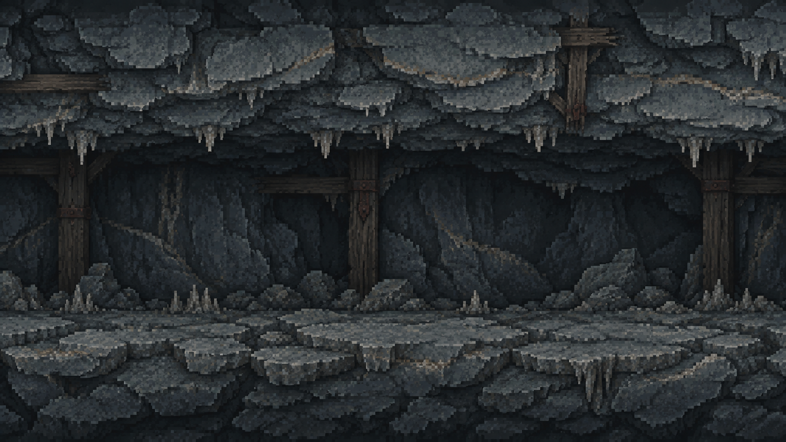
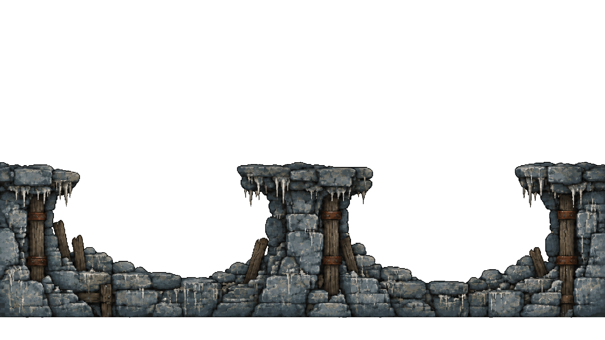
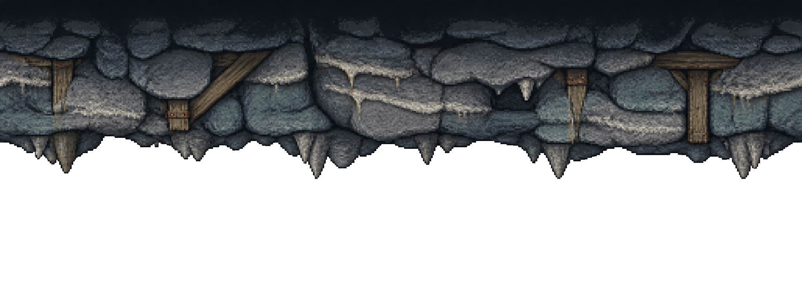

Inspect quiet combat space, alpha, contact and repeat seams in the game composition before bundling.
Drag travel to inspect parallax and mirrored seams. The outline marks one reference-height actor; review actual combat sprites in the runtime audit too.


